Doprowadź do najprostszej postaci:
- \(\frac{n!}{(n-1)!}\)
W tym zadaniu (podobnie jak w zadaniu poprzednim) skrócimy
wspólne czynniki z licznika i mianownika. Na początku będziemy musieli jednak tak
zapisać wyrażenie n!, aby pojawił się wspólny czynnik na górze i na dole ułamka.
Zauważmy najpierw, że w n! siedzi ukryta (n-1)!:
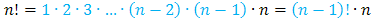
Zatem podstawiamy i skracamy:
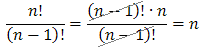
- \(\frac{n!}{(n-3)!}\)
Liczba n! występująca w liczniku ułamka jest większa od
liczby (n - 3)! występującej w mianowniku ułamka. Chcąc uzyskać wspólny czynnik w
liczniku i mianowniku (aby go potem skrócić) przedstawimy większą z tych liczb jako
mniejsza razy coś. Liczbę n! możemy zapisać np. tak:
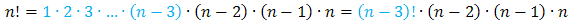
Teraz możemy już podstawić i skrócić ułamek:
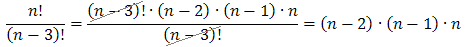
- \(\frac{(n-2)!}{n!}\)
Tutaj postępujemy dokładnie tak samo jak w poprzednim
przykładzie. Na początku zauważamy, że:
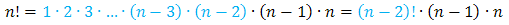
Zatem:
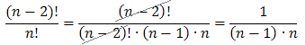
- \(\frac{(n-3)!}{(n-1)!}\)
Zauważmy, że wyrażenie z mianownika możemy zapisać
tak:
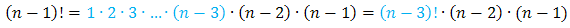
Dzięki takiemu przekształceniu uzyskamy wspólny czynnik w liczniku oraz
w mianowniku ułamka i będziemy mogli go skrócić:
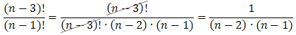
Tego typu "sztuczkę" bardzo często wykorzystuje się przy skracaniu ułamków z silnią.
Wystarczy jedynie zapamiętać, że zawsze w większej liczbie szukamy wspólnego czynnika dla
mniejszej.
- \(\frac{(2n)!}{(2n-3)!}\)
Liczba w liczniku jest większa, więc zapiszemy ją tak aby
pojawił się czynnik z mianownika:
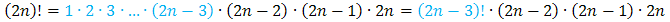
Dzięki takiemu zapisaniu uzyskamy
wspólny czynnik w liczniku i w mianowniku ułamka. Teraz będziemy mogli go skrócić:
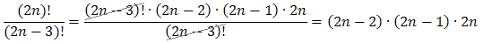
- \(\frac{(3n-2)!}{(3n)!}\)
Liczba w mianowniku jest większa, więc zapiszemy ją tak aby
pojawił się czynnik z licznika:
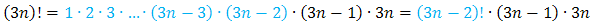
Dzięki takiemu zapisaniu mianownika
uzyskamy wspólny czynnik w liczniku i w mianowniku ułamka. Teraz będziemy mogli go
skrócić:
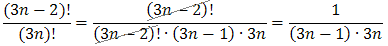